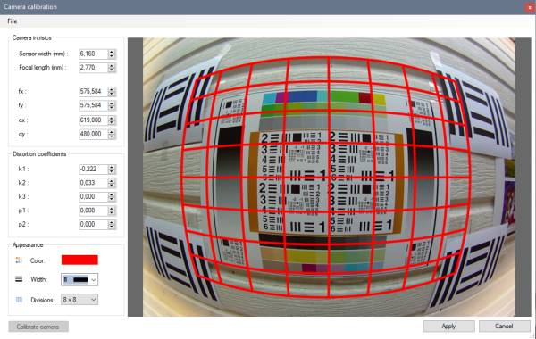
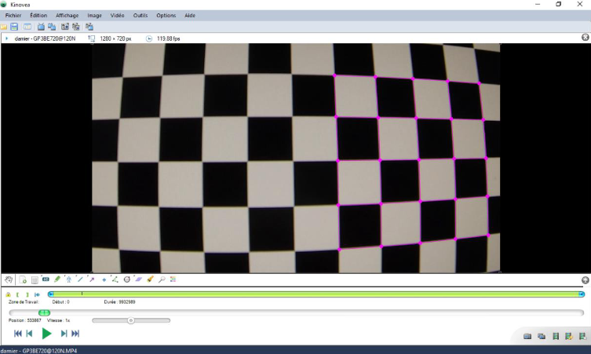
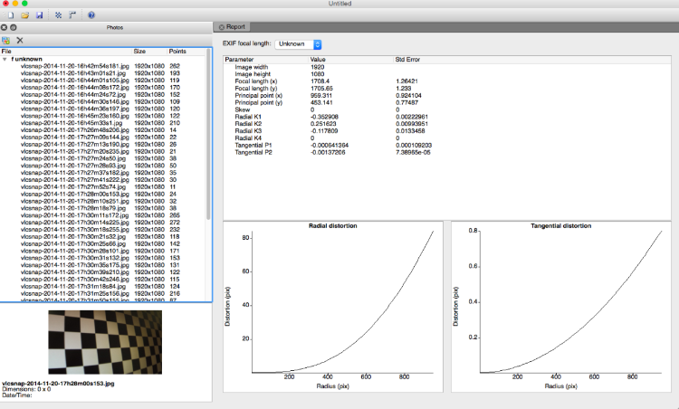

Lens distortion calibration¶
Introduction¶
When using cameras with significant distortion is it important to calibrate it in MotionON before making measurements. The lens distortion calibration rectifies the coordinates before they are passed to the spatial calibration.
Barrel distortion exposed by a GoPro action camera and the default coordinate system after lens distortion calibration.¶
Lens calibration is compatible with both line calibration and plane calibration. The coordinate system, lines and grid objects are drawn distorted to follow the distortion. The images themselves are not rectified.
Distortion coefficients¶
The description of the lens distortion is done in the lens calibration dialog in the menu .
There are multiple approaches to finding coefficients that best match a particular camera lens and camera mode, they are described below.
All the approaches involve filming a highly structured pattern in order to facilitate the distortion estimation, whether it is done visually or programmatically. This pattern can be a chess board, a brick wall, or any structured image displayed on a flat screen.
The following parameters are used during calibration:
fx, fy: focal length in pixels.
cx, cy: pixel coordinates of the optical center.
k1, k2, k3: radial distortion coefficients.
p1, p2: tangential distortion coefficients.
Visual estimation¶
In this approach the distortion is estimated visually by directly changing the distortion coefficients and trying to align the grid on the image. It is the least accurate approach but can still provide decent results.
Follow these steps:
Film the pattern straight on.
Load the video and open the lens calibration dialog.
Tweak k1 and k2 distortion coefficients to match the distorted grid image.
k1 is the distortion of the first order and should be used as a starting point to get the grid to align as best as possible in the central region of the image.
k2 can be used to counteract the main distortion at the periphery of the image.
You can play with the cx, cy, p1, p2 parameters as well to adjust the grid to the image.
Distortion grid¶
In this approach the distortion is estimated programmatically by MotionON from a set of distortion grid objects manually placed over images of the video.
Follow these steps:
Film a chess board or structured pattern from various angles.
Select some images (for example five) and add a Distortion grid object.
Map each point of each grid onto corners on the filmed pattern.
Open the lens calibration dialog and click the Calibrate camera button in the lower left.
This will compute and fill the distortion parameters.
Agisoft Lens¶
Agisoft Lens is an automatic lens calibration software.
Note
Agisoft Lens as a free, standalone desktop software is no longer published by Agisoft.
To use Agisoft Lens to calibrate the lens distortion follow these steps:
Open Agisoft Lens and display the chessboard using the Show chessboard button.
Film the chessboard displayed from up close in such a way that only parts of the chessboard are visible, not the background of the monitor.
Open the video in MotionON and export at least five images to separate files.
In Agisoft Lens import the images using the Add photos button.
Start calibration by using the Calibrate button, selecting the following options:
Fit cx, cy;
Fit k1, k2, k3;
Fit aspect;
Fit p1, p2.
Use Save calibration to save an XML file of the solved parameters.
In MotionON open the lens calibration dialog and do .
This will convert and fill the distortion parameters.
Exporting and importing distortion parameters¶
The distortion parameters are saved in the KVA file but if you want to re-use the same parameters on a different video you can export them to a separate file. Use the menus and in the lens calibration dialog.
Note
Any change of camera model, lens, or configuration options involving image resolution or zoom requires a new calibration procedure.